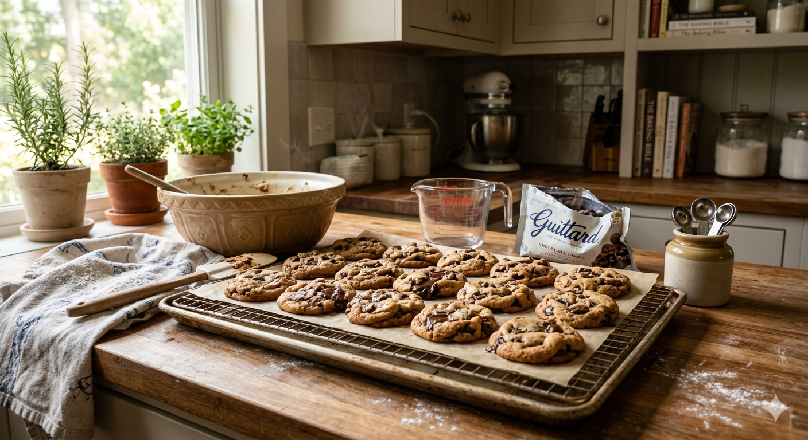
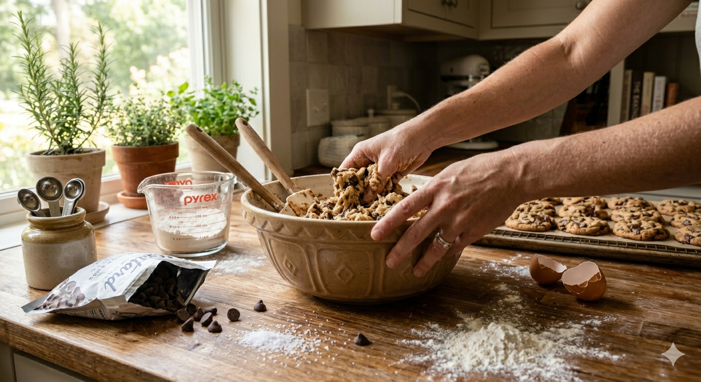
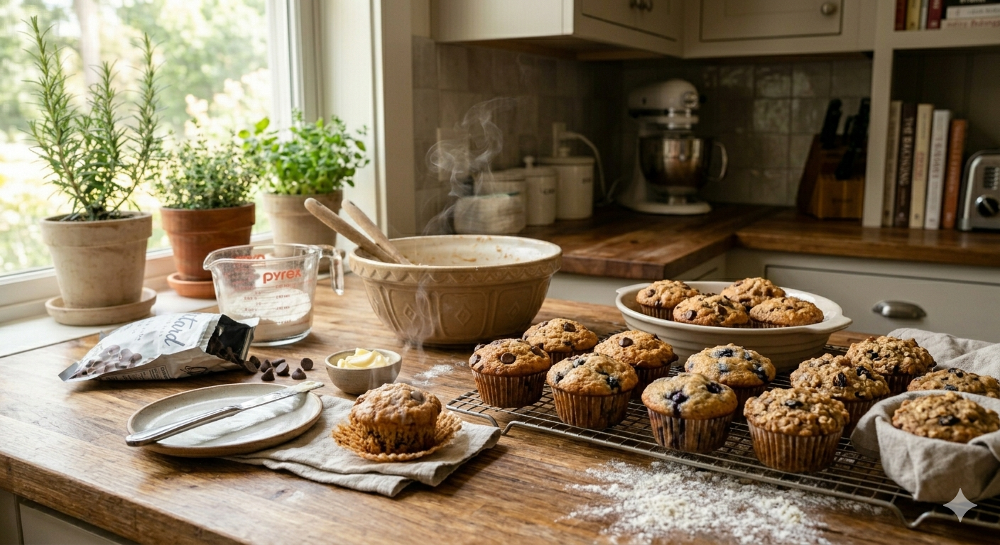
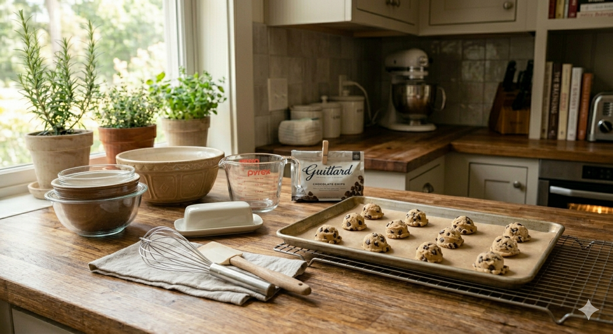
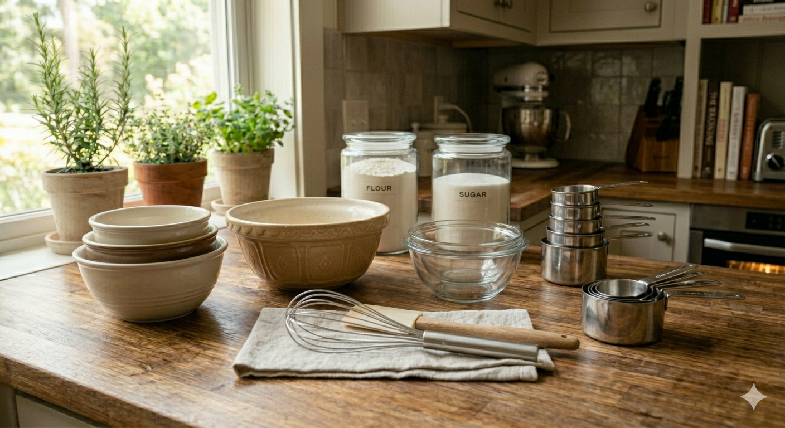
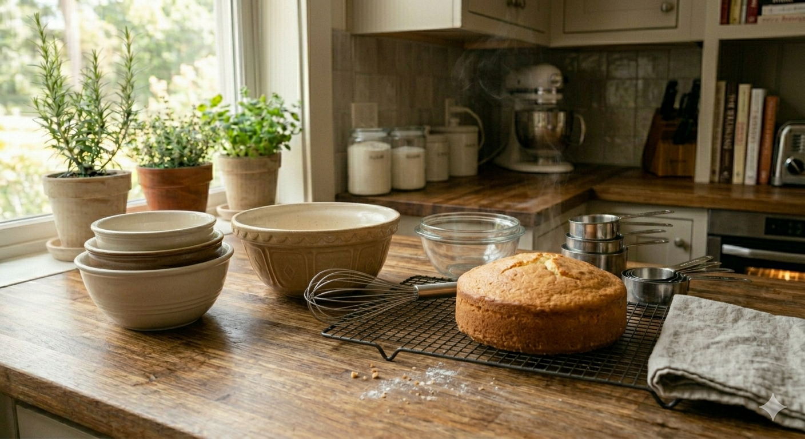

What
Baking is the process of creating warm, comforting treats using simple ingredients and a little patience. It includes cookies, muffins, banana bread, pastries, and small cakes, all the cozy things that make a kitchen feel cozy.
I enjoy baking simple recipes the most. Cookies, muffins, banana bread, and small cakes are my go‑to bakes because they’re easy, relaxing, and always turn out comforting. They are also obviously delicious so I can always share my creations with my family and friends
Baking gives me something positive to focus on, and the process itself feels grounding. I like not only doing it when I am craving something sweet but also when in need of a distraction.

AI prompt: photorealistic image of a warm kitchen counter with cookies
Who
Baking is for everyone, home bakers, professionals, families, and anyone who enjoys creating something warm and delicious.
For me, baking is a personal hobby that helps me slow down. I like making simple treats that fill the house with good smells and make my family smile.
It’s something I can do alone when I need peace, or with others when I want to share the experience, usually during the holidays.

AI prompt: photorealistic image of hands mixing cookie dough in a large bowl on a wooden kitchen counter, ingredients scattered
When
Baking can be done anytime, but certain moments make it extra special. Many people bake during holidays, weekends, dates or when the weather gets cooler.
Fall is perfect for banana bread and warm muffins, or pumpkin pie, while spring and summer bring lighter treats like tarts or fruity cakes.
I tend to bake when I’m stressed or when I want to feel grounded. The steps give my mind something steady to focus on, I find it to be a good way to wind down.

AI prompt: photorealistic image of freshly baked muffins on a kitchen table
Where
Most baking happens in the kitchen, whether it’s a home kitchen, a bakery, commercial kitchens, factories or a culinary classroom.
A cozy kitchen with warm lighting and the smell of something in the oven is the perfect environment for baking, in my personal opinion.
I usually bake at home, where I can take my time and enjoy the process and not worry about the mess I make.

AI prompt: photorealistic image of a clean, cozy home kitchen with baking tools on the counter, mixing bowls, a whisk, and a tray of cookies ready to go in the oven
How
Baking starts with simple tools: mixing bowls, measuring cups, a whisk, a spatula, and an oven.
Most recipes follow basic steps: combine dry ingredients, mix wet ingredients, bring them together, and bake until golden or whatever time is needed.
Simple recipes like cookies, muffins, and banana bread are perfect for beginners. The more things you bake the better you will become at baking and move up with harder and tedious reciples, like macarons.

AI prompt: photorealistic image of baking tools arranged neatly on a wooden counter: measuring cups, mixing bowls, a whisk, a spatula, and ingredients like flour and sugar
Why
People love baking for many reasons: creativity, comfort, nostalgia, and the joy of sharing food with others.
Baking can be a stress‑reliever, a form of self‑expression, someone's job or a way to show love.
For me, baking brings peace. It keeps my mind busy in a healthy way when I’m stressed, and the routine helps me feel grounded.

AI prompt: photorealistic image of a warm kitchen scene with a small freshly baked cake on a cooling rack
AI Prompts
I only used AI for images, specifically I used Gemini.